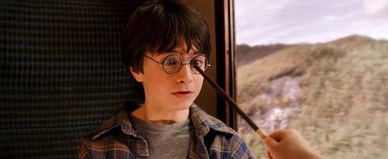

SPELLS

A
Aberto: unlocks a door; first seen in Fantastic Beasts (the movie)
Accio: Summoning Charm; used to summon objects toward the caster (usually from a long distance)
Aguamenti: produces a jet of water from the caster’s wand
Alohomora: used to unlock and open doors
Avada Kedavra: the Killing Curse; causes a green flash of light; Harry Potter is the only known survivor of this curse; one of three Unforgivable Curses banned by the Ministry of Magic
B
Bat-Bogey Hex: causes the victim’s bogies to enlarge, grow wings, and attack the victim
Bubble-Head Charm: creates a bubble of air around the caster’s head and mouth, acting as a breathing apparatus
C
Caterwauling Charm: causes a loud, high-pitched shrieking noise when encountered
Cheering Charm: causes the person upon whom the spell has been cast to become happy and content
Colloportus: used to magically lock a door and prevent it from being opened by non-magical means
Confringo: Blasting Charm; causes items the charm comes in contact with to burst into flames
Confundo: Confundus Charm; causes the victim to become confused and disoriented
Crucio: causes the victim extreme pain; one of three Unforgivable Curses banned by the Ministry of Magic
D
Descendo: causes the target object to move downward
Diffindo: Severing Charm; causes the targeted object to rip or tear
Disillusionment Charm: hides objects and humans
E
Engorgio: Engorgement Charm; causes objects to increase in size
Episkey: used to heal minor injuries
Evanesco: used to vanish objects
Expecto Patronum: used to cast a Patronus (a physical manifestation of one’s most positive feelings), which guards against dementors and can be used for communications
Expelliarmus: used to disarm another wizard
F
Finestra: shatters glass; first appears in Fantastic Beasts
H
Homenum Revelio: allows the caster to detect human presence
I
Impedimenta: Impediment Jinx; prevents the victim from approaching the caster (by knocking back, tripping, etc.)
Imperio: removes the victim’s free will and ability to make decisions for him- or herself; one of three Unforgivable Curses banned by the Ministry of Magic
Impervius: causes objects to repel outside forces, such as water
Incendio: creates fire
L
Levicorpus: a nonverbal spell that causes the victim to be dangled upside down by his or her ankles
Liberacorpus: the nonverbal countercurse to Levicorpus
Locomotor: causes an object to rise and move at the command of the caster
Lumos: projects a beam of light from the user’s wand
M
Morsmordre: conjures the Dark Mark
Muffliato: used to prevent conversations from being overheard by filling the ears of those nearby with an unidentifiable buzzing noise

N
Nox: puts out wand light
O
Obliviate: used to hide memories
P
Permanent Sticking Charm: causes objects to permanently stay in place
Petrificus Totalus: Full Body-Bind Curse; temporarily binds the victim’s entire body, thus immobilizing him or her
Portus: turns objects into Portkeys
Priori Incantato: creates an “echo” of previously performed spells
Protego: Shield Charm; rebounds minor to moderate hexes, jinxes, and spells upon their caster
R
Reducto: Reductor Curse; breaks objects and in its strongest form has the ability to disintegrate them
Rennervate: revives the victim of a Stunning Spell
Relashio: causes the victim to release whatever they are holding
Rennervate: revives someone who has been Stunned
Reparo: used to repair broken objects
Revelio: a revealing spell; first used in the Fantastic Beasts film to reveal Graves is Grindelwald
Rictusempra: Tickling Charm; causes an extreme tickling sensation that disables the victim
Riddikulus: spell used when fighting a Boggart; causes the Boggart to transform into something the caster finds humorous
S
Scourgify: used to clean objects
Sectumsempra: spell that causes deep gashes on the victim’s body
Silencio: used to make something silent
Sonorus: magically magnifies one’s voice
Stupefy: used to stun a victim
T
Taboo: a jinx that can be placed upon a word so that when the word is spoken, a magical disturbance is created which alerts the caster of the Taboo
Tergeo: used to remove matter (blood, dirt, etc.) from an object
U
Unbreakable Vow: causes the vow being taken by the witch or wizard to be inviolable with the consequence of death if it is breeched
W
Wingardium Leviosa: Hover Charm; causes an object to levitate